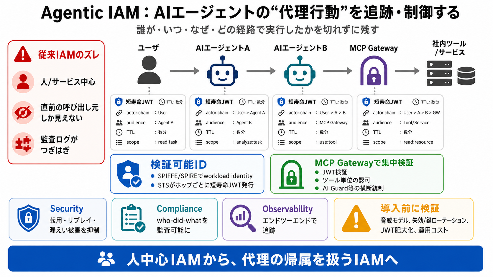

IETF AIMS: How AI Agents Authenticate with SPIFFE and OAuth 2.0 - DEV Community
High-risk AI systems must demonstrate proper identity and authorization controls by August 2, 2026. AIMS provides the re…

監査可能な「代理行動」
AIエージェントが複数の社内システムを操作するとき、「誰が、いつ、なぜ、どの経路で」実行したかを切れずに残す仕組みが要る。
従来IAMのズレ
従来のアクセス制御は「人」「サーバ（サービスアカウント/APIキー）」「単発処理」を前提にしがちで、代理で意思決定する主体（agency）を表現しにくい。
ホップ越しの欠落
多段のエージェント連携では、各システムが“直前の呼び出し元”しか見えず、アクタチェーンが途中で欠けると監査が破綻する。
検証可能ID
既存のゼロトラストをエージェントにも拡張し、SPIFFE/SPIREに基づくワークロード検証可能IDを起点に、STSがエージェントごと・ホップごとに短寿命JWTを発行する。
アクタチェーンを埋め込む
アクタチェーン（ユーザ→エージェント→次ホップ…）をJWTに埋め込むことで、各システムが同じ文脈を前提に監査とポリシー評価を行える。
使い回し抑止
JWTは単一ホップ向けでAudience（宛先）と短いTTLを持ち、別宛先への転用や再実行（リプレイ）を抑える設計になっている。
統制点はMCP Gateway
MCP Gatewayを中継点として、JWT検証とポリシー適用をツール呼び出し単位で行い、統制の一貫性を確保する。
正しい実装を舗装する
A2A（Agent-to-Agent）呼び出しを安全に行える標準クライアントで、STSトークン交換やアクタチェーン保持の“漏れ”を減らす。
レイテンシは許容域
ホップ数が増えるとトークン交換で遅くなる可能性があるが、STSトークン交換APIのP99レイテンシが40ms未満と報告されている。
利点の整理
導入時のギャップ
記事は部品のセットとして示す一方、脅威モデルや運用・移行の失敗パターン、コストの定量比較までは深掘りが少ない。
結論
このアプローチは「AI時代のIAM」を、連鎖認証（アクタチェーン）・統制点（MCP Gateway）・可観測性（observability）で実装する方向性として要約できる。
High-risk AI systems must demonstrate proper identity and authorization controls by August 2, 2026. AIMS provides the re…
| | | | AI Agent Authentication and Authorization IETF RFC Draft (ietf.org) | | 2 points by mooreds 5 months ago | hid…
IETF WIMSE (Workload Identity in Multi-System Environments) WG - standardizing workload identity tokens and token exchan…
For a financial services or fintech organization that needs to deploy AI agents in compliance with audit and access cont…
SPIFFE is a specification. It defines the identity model — SPIFFE IDs, SVIDs, trust domains — but says nothing about how…